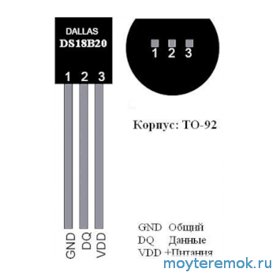
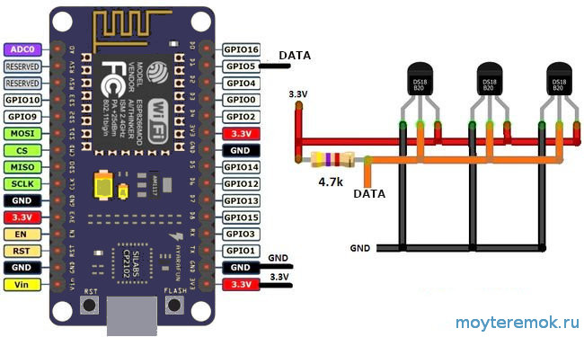
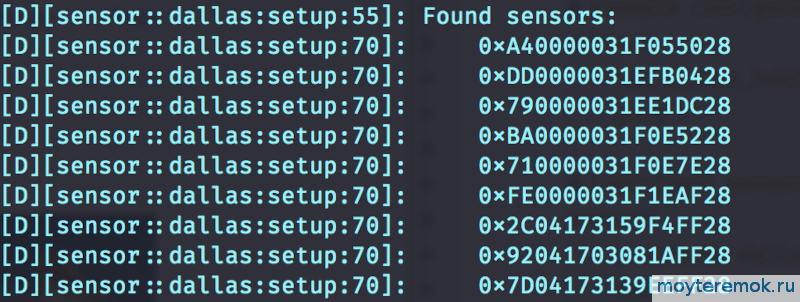

Сейчас существует множество датчиков температуры и комбинированных, которые можно без проблем подключить к ESPhome и следовательно к Home Assistant. Достоинства датчиков Dallas esphome ds18b20 : в их компактности, точном измерении без подстройки, низкой стоимости и их можно подключить кучу на одну линию данных, а следовательно занять только один GPIO на esp8266 (esp32, Arduino или другом). Вы можете использовать эти датчики везде, где требуется измерять температуру, но я для первого теста применил их в котельной на коллекторе водяного теплого пола для отслеживания падения температур по веткам коллектора на обратке, чтобы точно управлять «расходом теплоносителя».
На коллектор теплого пола идет всего одна линия данных на все датчики. Плюс питание естественно. Далее крепим по одному датчику Dallas ds18b20 на каждую трубу обратки и один на подачу. Я не заморачивался и примотал датчики алюминиевым скотчем для систем вентиляции и сендвич-дымоходов из нержавейки.
Я последнее время люблю использовать модуль esp-12f из за того, что в итоге экономиться место на плате и стоят они меньше, но чтобы не заморачиваться можно использовать nodemcu, wemos или любой другой контроллер. Заказываю esp-12f за копейки здесь.
Естественно, что программный код предложенный в этой записи только для семейства ESP под ESPhome. Если вы новичок рекомендую использовать nodemcu или wemos, там уже распаяны все подтягивающие резисторы и главное есть USB интерфейс для прошивки без танцев с бубном.
Подключение ds18b20 к esphome
Распиновка типового датчика:

Еще бывают версии в металлической колбочке типа герметичные (смотри картинку в заголовке записи), удобно, например, для заливки в стяжку теплого пола.
Рассмотрим подключение датчиков dallas ds18b20 на примере nodemcu.

Берем один или пачку датчиков. Подключаем питание. Подключаем линию данных к входу GPIO5 (или к любому другому, только вносим изменения в код прошивки). Не забываем установить резистор на 4.7КОм.
Прошивка под esphome ds18b20
Удобнее всего залить прошивку из установленного в Home Assistant компонента ESPhome. Тут есть нюанс, так как каждый датчик ds18b20 имеет уникальный адрес. Оно и понятно ведь у нас их будет куча на одной линии данных. Необходимо эти адреса узнать.
Настоятельно рекомендуется использовать address атрибут для создания датчиков dallas, потому что если у вас на шине установлено несколько датчиков и автоматическое обнаружение датчиков завершается сбоем, индексы всех датчиков будут сдвинуты на единицу.
Для этого сначала добавляем в код без конкретики:
dallas:
- pin: GPIO05
В логах смотрим адреса (уровень журнала должен быть установлен не ниже debug!).

Затем копируем эти адреса в свой код прошивки:
dallas:
- pin: GPIO05 #пин к которому у вас подключена линия данных от ds18b20
sensor:
- platform: dallas
address: 0xA40000031F055028 #подставляем свои адрес
name: "Temperature_1"
- platform: dallas
address: 0xDD0000031EFB0428 #подставляем свои адрес
name: "Temperature_2"
- platform: dallas
address: 0xBA0000031F0E5228 #подставляем свои адрес
name: "Temperature_3"
Для того, чтобы понять какой адрес соответствует какому датчику, можно нагревать (или охлаждать) их по очереди и смотреть логи. Потом исправляем название (name: «Temperature_1») под себя.